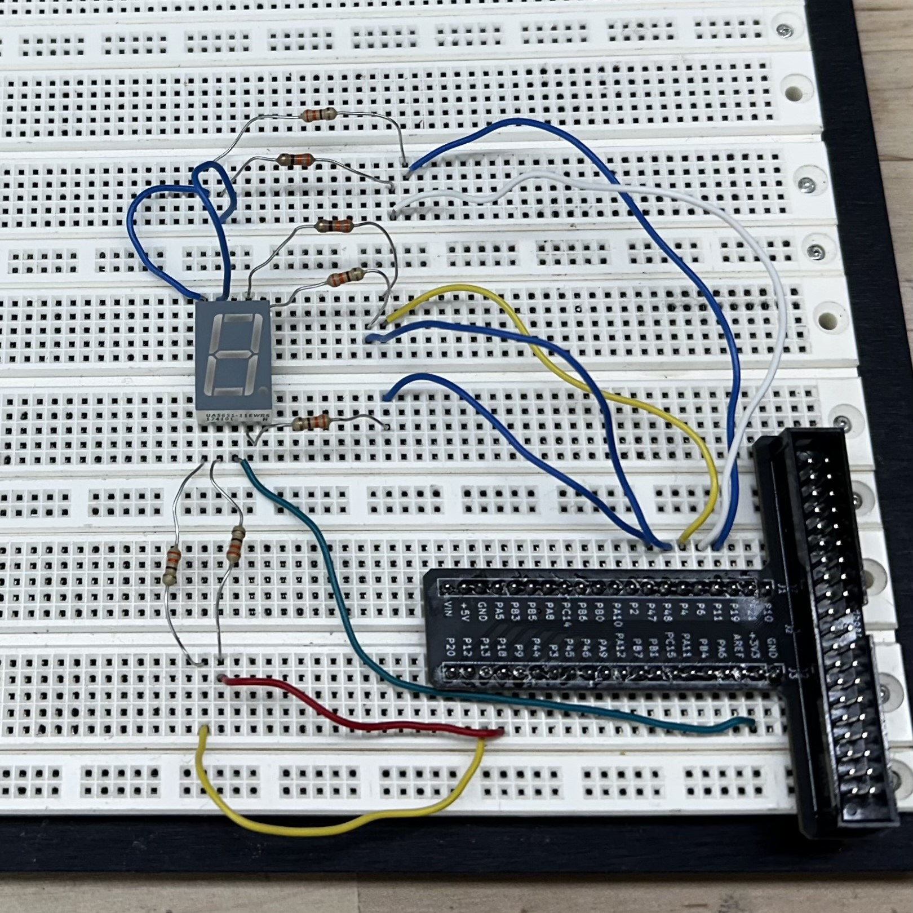
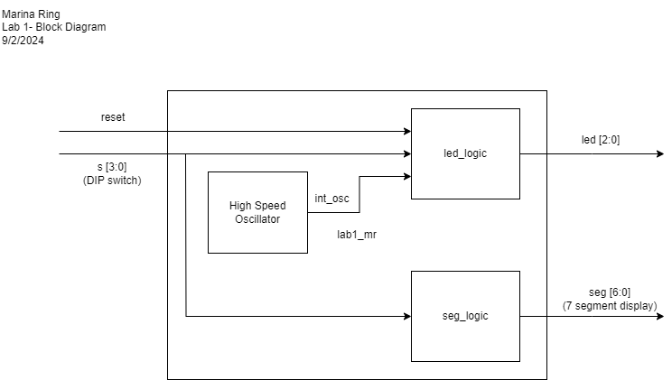
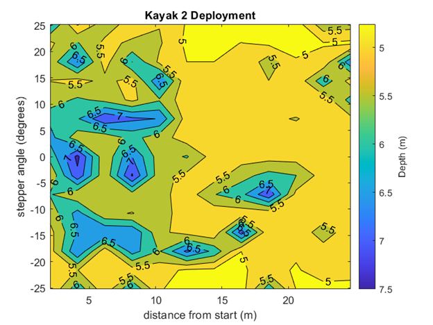

Lab 1: FPGA and MCU Setup and Testing
Introduction
This lab built the foundation for all of the future labs in this class by pushing me to familiarize myself with all of the hardware and software components we will be using throughout the semester. First, I soldered all of the components for my board, putting together a network of switches, buttons, LEDs, and wiring to interface with MCU and FPGA development boards. Then, I wrote in Verilog to program and test a 7-segment display to get familiar with Radiant and Segger, the software tools that we will be using going forward. See the E155 Lab 1 Page for a more detailed overview of the specifications and instructions for this lab.
Setup and Circuitry
A picture of my completed board!
On the left is a picture of my completed board. It took around 4 hours in total to solder, including a breadboard connecter that is depicted
in the bottom left image of my circuit.
In order to setup the circuit for the 7 segment display, shown in the bottom left image, it was important to look at the datasheet to determine its specifications.
For the MAN6400 Series, the absolute maximum rating for continuous forward current is 30mA per segment. I chose an operating current of 10mA to stay well
below the maximum rating and found the appropriate resistor from V = IR. Given an input voltage of 3.3V, the resistor value needed to maintain
current at 10mA is 330Ω. Therefore, I connected a 330Ω between each segment and corresponding pin.
 A picture of the final circuit implemented on a Proto-Board. A circuit schematic for this lab. The circuit schematic on the left details the Upduino pins I used to power the display. Since the MAN6410 is a common anode display, 3.3V is supplied at the anode and each pin acts as a cathode. To turn a segment on, a pin is set to low or 0 and so current can flow down that path. To turn a segment off, the pin is set back to high or 1.
Software and Verification
 A block diagram model for this system. All spring semester sophomore engineers at Harvey Mudd undergo a rigorous lab-based class called E80, or Experimental Engineering. In the latter half of this class, students work in teams of four to five students to develop a fully autonomous underwater robot that measures a phenomenon of their choice with a limit of $50 to purchase sensors. At the end of the class, this robot is deployed at Dana Point Beach, a harbor in the suburbs of Los Angeles.
My team chose to measure ocean depth using a side-sweeping sonar system composed of a speaker, microphone, and a stepper motor. We carefully weighed tradeoffs to choose the most optimal combination of sensors to stay under our budget. In order to make up for limits in the equipment, we designed circuitry to perform pulse generation and audio amplification on the speaker as well as pulse detection on the microphone.
I designed the depth measurement process using C++ on a Teensy 4.0 microcontroller. First, LYLE’s speaker sends a pulse signal. Then, a microphone detection cycle initiates and senses for a return signal. Finally, the stepper moves 3.6 degrees in the negative or positive direction. This cycle continues at one location until a full sweep of data is collected (-36 to 36 degrees). The robot then moves autonomously to a new location and the depth measurement process repeats. Throughout this process, microphone output, stepper position, and GPS data are all logged to an SD card.
 In this map, the shore is to the right and deeper waters to the left, note how depth decreases as you approach the shore!
I integrated all of the sensors and mechanical components into a cohesive system performing this process. I wrote well-documented object-oriented code to program sensor controls as well as data collection mechanisms. I wrote custom data logging procedures to handle the rapid and large collection of data during pulse detection. By isolating the time of arrival of a pulse, I was able to calculate approximate depth around the robot and generate topographical maps in MATLAB. On the right is an example from our deployment at Dana Point Beach.
For this project, my team won the J.R. Phillips Award for outstanding experimental technique and engineering judgment. We were chosen for this award over all other sophomore engineering teams (roughly 15 other teams).